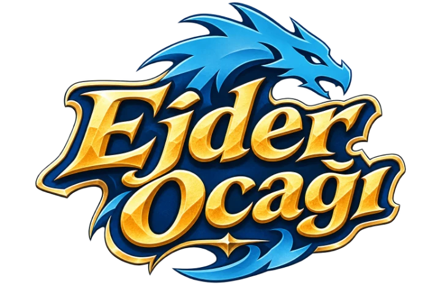

Kullanım koşulları
Taslak · son güncelleme 20 Kasım 2026
Ejder Ocağı'nı oynayarak aşağıdaki koşulları kabul etmiş olursun. Kısa tuttuk; okuması birkaç dakika sürer.
Oyunu kim sunuyor
Ejder Ocağı'nı [İŞLETMECİ ADI] sunar. İletişim: [İLETİŞİM E-POSTASI]. Verinin nasıl işlendiği Gizlilik sayfasında yazar.
Kimler oynayabilir
Oyun 13 yaş ve üstü için tasarlanmıştır. 13 yaşından küçükler oyunu ailesinin izniyle oynamalıdır.
Oyun
- Oyun olduğu gibi sunulur. Geliştirme sürüyor: kurallar, denge ve içerik değişebilir; hizmet bakım için kesilebilir.
- Oyun kaydın tarayıcında durur. Kaydını menüden dosyaya yedeklemek senin sorumluluğundadır.
Oyun içi varlıklar
- Altın, ejderha, yumurta ve eşyalar oyunun parçasıdır; gerçek para değeri taşımaz ve gerçek parayla geri alınmaz.
- Oyun içi varlıkların gerçek para karşılığında oyun dışında alınıp satılması yasaktır.
- Bir hata yüzünden haksız kazanılan varlıklar geri alınabilir.
Davranış
- Hile yazılımı, otomatik oynatma aracı ya da sunucuya zarar veren istekler kullanılamaz. Bulduğun bir açığı kullanmak yerine bize bildir.
- Oyuncu adında, sohbette ve fısıltıda küfür, hakaret, nefret söylemi, taciz, tehdit ve cinsel içerik yasaktır.
- Başkasının kimliğine bürünmek yasaktır. Oyunun yöneticisi ya da destek ekibi gibi görünen adlar (Admin, Moderatör, Destek ...) kullanılamaz.
- Kendinin ya da başkasının kişisel bilgisini (gerçek ad, adres, telefon, okul) paylaşmak yasaktır.
- Takasta ya da Bedesten'de öteki oyuncuyu kandırmaya çalışmak, reklam yapmak ve sohbeti aynı sözle doldurmak yasaktır.
Şikâyet ve yaptırım
- Uygunsuz bir ad ya da söz görürsen o oyuncuya dokun ve Şikâyet et'i seç. Yalnız sözlerini görmek istemiyorsan Engelle yeter.
- Sohbet ve adlar uygunsuz sözcüklere karşı kendiliğinden süzülür; süzgeç her şeyi yakalamaz, şikâyetler bir kişi tarafından okunur.
- Kurallara uymayan hesap, ihlalin ağırlığına göre uyarılır, sohbeti ya da takası bir süre kapatılır, adı değiştirilir ya da hesap kapatılır. Ağır ihlallerde (tehdit, nefret söylemi, dolandırıcılık, hile) önce uyarı gerekmez.
- Bir kararın yanlış olduğunu düşünüyorsan [İLETİŞİM E-POSTASI] adresine yaz; yeniden bakarız.
İçerik
Oyunun adı, çizimleri, metinleri, müziği ve kodu sahiplerine aittir; izinsiz kopyalanamaz ve dağıtılamaz. Ekran görüntüsü ve oynanış videosu paylaşmak serbesttir.
Sorumluluk
Oyunu kesintisiz ve hatasız sunmaya çalışırız ama bunu garanti edemeyiz. Yasanın izin verdiği ölçüde, oyunun kesilmesinden ya da oyun içi varlıkların kaybından doğan zararlardan sorumlu değiliz. Tüketici olarak yasadan doğan hakların saklıdır.
Hesabın kapanması
Hesabını istediğin zaman bırakabilir, silinmesini isteyebilirsin. Hesap kapanınca oyun içi varlıklar da silinir ve geri getirilemez.
Uygulanacak hukuk
Bu koşullara Türkiye Cumhuriyeti hukuku uygulanır.
Değişiklikler
Bu koşullar güncellenebilir. Önemli değişiklikler oyunun giriş ekranında duyurulur; sayfanın başındaki tarih de değişir.